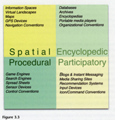

BOOK AND SOFTWARE REVIEWS
Murray, Janet H.. Inventing the medium: principles of interaction design as a cultural practice. Cambridge, MA: MIT Press. 2012, xiii, 483 p. ISBN 978-0-262-01614-8. £34.95
Janet Murray might be thought of as a kind of Renaissance woman, with a PhD in English from Harvard, she explores interaction design from a humanistic perspective, having gone from studying English to teaching humanities at MIT and becoming involved in interaction design (or what used to be known as human-computer interaction). So, what does a humanistic approach to the design of digital objects mean? First, 'From a humanities perspective, the design of digital objects is a cultural practice like writing a book or making a film' (p. 1), which leads to the exposition of three principles of interaction design from this perspective:
All things made with electronic bits and computer code belong to a sigle new medium, the digital medium, with its own unique affordances.
Designing any single artifact within this new medium is part of the broader collective effort of making meaning through the invention and refinement of digital media conventions.
When we expand the meaning-making conventions that make up human culture, we expand our ability to understand the world and to connect with one another. (p. 2)
Beginning from these principles, the book is structured in five parts: 'Changing technologies, lasting innovations'; 'Desiging expressive procedures'; 'Designing encyclopedic resources'; and 'Scripting interaction'.
The first of these parts is centred upon the concept of affordances, that is, the qualities of things that make action possible. Thus, the affordances of the computer, as set out by Murray, are that it is 'encyclopedic, spatial, procedural, and particpatory (p. 51). These affordances are organized into a matrix, shown here in Figure 3.3 reproduced from the book. The matrix is then used to analyse a number of Website, which we might think of as 'ideal types' - Google is predominantly encyclopaedic and procedural; Wikipedia is encyclopaedic and participatory. On this basis, Information Research can be seen as mainly encyclopaedic and, to a small degree, given the blog and the LinkedIn discussion group, participatory. Maximising the effect of the affordances means developing digital artefacts, in this case, Websites, that make effective use of the characteristics of their relevant affordances, or even, as in the case of the variety of services now offered by Google, reaching out to make use of affordances that have now previously been used. For example, Information Research could expand into the spatial dimension by establishing a Second Life discussion area, in which authors could meet readers.
One of the many interesting aspects of this book is the way the author draws upon a number of different disciplines to bring insights into interaction design. For example, in exploring the design requirements of the spatial dimension, one model for the organization of information is the library model, where the author explores the implications of library catalogues, alphabetical indexes and the whole gamut of tools that librarians put under the heading of 'organization of knowledge'.
Part IV, on designing encyclopaedic resources, also presents a variety of models from recognized disciplines, but presents them in novel ways. Thus, the database model is used in the discussion of finding the appropriate level of granularity for an encyclopaedic site, that is the level of detail at which the elements of information are identified. This is followed by the structured document model and the idea of metadata, which explores the problems of search and retrieval in large, encyclopaedic sites. There's a kind of homage to Ted Nelson in this chapter, as the author points out that he was largely responsible for the popularization of the idea of hypertext systems, although his own system, Xanadu, was never realised to any significant extent. We can understand why the World Wide Web succeeded and Xanadu failed: it was simply that Xanadu was much more complex, demanding that all elements of a document should be linked back to their originating documents and authorship and that those originating documents should link forward to their derivatives. The WWW on the other hand, had HTML, the scripting language that anyone could learn how to use.
There is much more in this fascinating book, which I suspect will become something of a 'Bible' of interaction design. Certainly, anyone who is at all serious about designing Websites, whether they be personal home pages, library Websites, digital libraries, or electronic journals should have this on their desks as a constant sources of ideas and stimulation.